目前我们写的简单函数中可以有多条语句，但这些语句总是从前到后顺序执行的。除了顺序执行之外，有时候我们需要检查一个条件，然后根据检查的结果执行不同的后续代码，在C语言中可以用分支语句实现，比如：
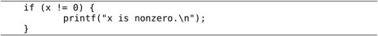
其中x!=0表示“x不等于0”的条件，这个表达式称为控制表达式（Controlling Expression）如果条件成立，则{}中的语句被执行，否则{}中的语句不执行，直接跳到}后面。if和控制表达式改变了程序的控制流程（Control Flow），不再是从前到后顺序执行，而是根据不同的条件执行不同的语句，这种控制流程称为分支（Branch）。上例中的!=号表示“不等于”，像这样的运算符如表4.1所示。
表4.1 关系运算符和相等性运算符
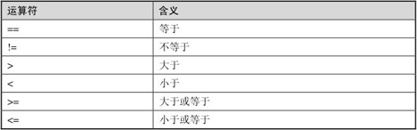
注意以下几点：
1．这里的==表示数学中的相等关系，相当于数学中的=号，初学者常犯的错误是在控制表达式中把==写成=，在C语言中=号是赋值运算符，两者的含义完全不同。
2．如果表达式所表示的比较关系成立则值为真（True），否则为假（False），在C语言中分别用int型的1和0表示。如果变量x的值是-1，那么x>0这个表达式的值为0，x>-2这个表达式的值为1。
3．在数学中a<b<c表示b既大于a又小于c，但作为C语言表达式却不是这样。以上几种运算符都是左结合的，请读者想一下这个表达式应如何求值。
4．这些运算符的两个操作数应该是相同类型的，两边都是整型或者都是浮点型可以做比较，但两个字符串不能做比较，在第24.1.5节我们会介绍比较字符串的方法。
5．==和!=称为相等性运算符（Equality Operator），其余四个称为关系运算符（Relational Operator），相等性运算符的优先级低于关系运算符。
总结一下，if(x!=0){...}这个语句的计算顺序是：首先求x!=0这个表达式的值，如果值为0，就跳过{}中的语句直接执行后面的语句，如果值为1，就先执行{}中的语句，然后再执行后面的语句。事实上控制表达式取任何非0值都表示真值，例如if(x){...}和if(x!=0){...}是等价的，如果x的值是2，则x!=0的值是1，但对于if来说不管是2还是1都表示真值。
和if语句相关的语法规则如下：
语句→if(控制表达式)语句
语句→{语句列表}
语句→;
在C语言中，任何允许出现语句的地方既可以是由;号结尾的一条语句，也可以是由{}括起来的若干条语句或声明组成的语句块（Statement Block），语句块和上一章介绍的函数体的语法相同。注意语句块的}后面不需要加;号。如果}后面加了;号，则这个;号本身又是一条新的语句了，在C语言中一个单独的;号表示一条空语句（Null Statement）。上例的语句块中只有一条语句，其实没必要写成语句块，可以简单地写成：
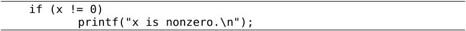
语句块中也可以定义局部变量，例如：
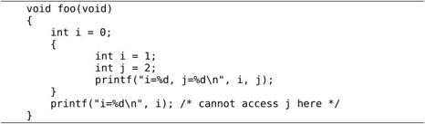
和函数的局部变量同样道理，每次进入语句块时为变量j分配存储空间，每次退出语句块时释放变量j的存储空间。语句块也构成一个作用域，和例3.6的分析类似，如果整个源文件是一张大纸，foo函数是盖在上面的一张小纸，则函数中的语句块是盖在小纸上面的一张更小的纸。语句块中的变量i和函数的局部变量i是两个不同的变量，因此两次打印的i值是不同的；语句块中的变量j在退出语句块之后就没有了，因此最后一行的printf不能打印变量j，否则编译器会报错。语句块可以用在任何允许出现语句的地方，不一定非得用在if语句中，单独使用语句块通常是为了定义一些比函数的局部变量更“局部”的变量。
1．以下程序段编译能通过，执行也不出错，但是执行结果不正确（根据第1.3节的定义，这是一个语义错误），请分析一下哪里错了。还有，既然错了为什么编译能通过呢？
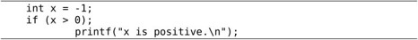
if语句还可以带一个else子句（Clause），例如：
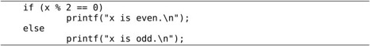
这里的%是取模（Modulo）运算符，x%2表示x除以2所得的余数（Remainder），C语言规定%运算符的两个操作数必须是整型的。两个正数相除取余数很好理解，如果操作数中有负数，结果应该是正是负呢？C99规定，如果a和b是整型，b不等于0，则表达式(a/b)*b+a%b的值总是等于a，再结合第2.5节讲过的整数除法运算要Truncate towards Zero，可以得到一个结论：%运算符的结果总是与被除数同号（想一想为什么）。其他编程语言对取模运算的规定各不相同，也有规定结果和除数同号的，也有不做明确规定的。
取模运算在程序中是非常有用的，例如上面的例子判断x的奇偶性（Parity），看x除以2的余数是不是0，如果是0则打印x is even.，如果不是0则打印x is odd.，读者应该能看出else在这里的作用了，如果在上面的例子中去掉else，则不管x是奇是偶，printf("x is odd.\n");总是执行。为了让这条语句更有用，可以把它封装成一个函数：
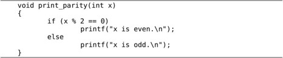
把语句封装成函数的基本步骤是：把语句放到函数体中，把变量改成函数的参数。这样，以后要检查一个数的奇偶性只需调用这个函数而不必重复写这条语句了，例如：
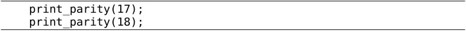
if/else语句的语法规则如下：
语句→if(控制表达式)语句else语句
右边的“语句”既可以是一条语句，也可以是由{}括起来的语句块。一条if语句中包含一条子语句，一条if/else语句中包含两条子语句，子语句可以是任何语句或语句块，当然也可以是另外一条if或if/else语句。根据组合规则，if或if/else可以嵌套使用。例如可以这样：
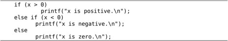
也可以这样：
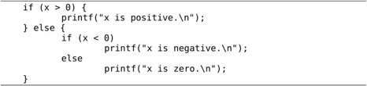
现在有一个问题，类似if (A) if (B) C; else D;形式的语句怎么理解呢？可以理解成：
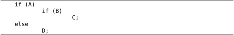
也可以理解成：
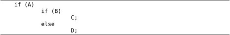
在第2.1节讲过，C代码的缩进只是为了程序员看起来方便，实际上对编译器不起任何作用，你的代码不管写成上面哪一种缩进格式，在编译器看起来都是一样的。那么编译器到底按哪种方式理解呢？也就是说，else到底是和if (A)配对还是和if (B)配对？很多编程语言的语法都有这个问题，称为Dangling-else问题。C语言规定，else总是和它上面最近的一个if配对，因此应该理解成else和if (B)配对，也就是按第二种方式理解。如果你写成上面第一种缩进的格式就很危险了：你看到的是这样，而编译器理解的却是那样。如果你希望编译器按第一种方式理解，应该明确加上{}：
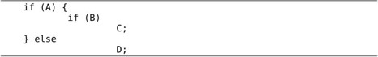
顺便提一下，浮点型的精度有限，不适合用==运算符做精确比较。以下代码可以说明问题：
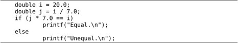
不同平台的浮点数实现有很多不同之处，在我的平台上运行这段程序结果为Unequal，即使在你的平台上运行结果为Equal，你再把i改成其他值试试，总有些值会使得结果为Unequal。等学习了第13.4节你就知道为什么浮点型不能做精确比较了。
1．写两个表达式，分别取整型变量x的个位和十位。
2．写一个函数，参数是整型变量x，功能是打印x的个位和十位。
在第4.1节讲过，a<b<c不表示b既大于a又小于c，那么如果想表示这个含义该怎么写呢？可以这样：
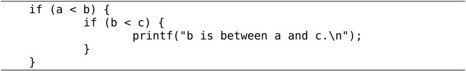
我们也可以用逻辑与（Logical AND）运算符表示这两个条件同时成立。逻辑与运算符在C语言中写成两个&（Ampersand），上面的语句可以改写为：
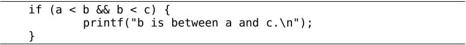
对于a < b && b < c这个控制表达式，要求“a < b的值非0”和“b < c的值非0”这两个条件同时成立整个表达式的值才为1，否则整个表达式的值为0。也就是只有两个条件都为真，它们做逻辑与运算的结果才为真，有一个条件为假，则逻辑与运算的结果为假，如表4.2所示。
表4.2 AND的真值表
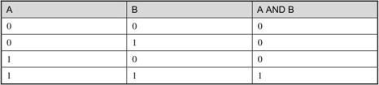
这种表称为真值表（Truth Table）。注意逻辑与运算的操作数以非0表示真以0表示假，而运算结果以1表示真以0表示假（类型是int），我们忽略这些细微的差别，在表中全部以1表示真以0表示假。C语言还提供了逻辑或（Logical OR）运算符，写成两个|线（Pipe Sign），逻辑非（Logical NOT）运算符，写成一个!号（Exclamation Mark），它们的真值表如表4.3及表4.4所示。
表4.3 OR的真值表
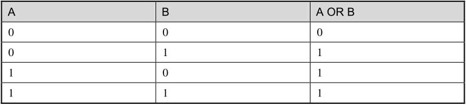
表4.4 NOT的真值表
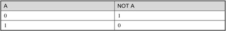
逻辑或表示两个条件只要有一个为真，它们做逻辑或运算的结果就为真，只有两个条件都为假，逻辑或运算的结果才为假。逻辑非的作用是对原来的逻辑值取反，原来是真的就是假，原来是假的就是真，例如!(x > 1)，如果表达式x > 1的值非零，则!(x > 1)的值为0。逻辑非运算符只有一个操作数，称为单目运算符（Unary Operator），以前讲过的加减乘除、赋值、相等性、关系、逻辑与、逻辑或运算符都有两个操作数，称为双目运算符（Binary Operator）。
关于逻辑运算的数学体系称为布尔代数（Boolean Algebra），以它的创始人布尔命名。在编程语言中表示真和假的数据类型叫做布尔类型，在C语言中通常用int型来表示，非0表示真，0表示假⑨。布尔逻辑是写程序的基本功之一，程序中的很多错误都可以归因于逻辑错误。以下是一些布尔代数的基本定理，为了简洁易读，真和假用1和0表示，AND用*号表示，OR用+号表示（从真值表可以看出AND和OR运算确实有点像乘法和加法运算），NOT用¬表示，变量x、y、z的值可能是0也可能是1。
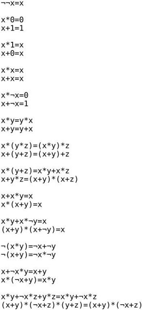
除了第1行之外，这些公式都是每两行一组的，每组的两个公式就像对联一样：把其中一个公式中的*换成+、+换成*、0换成1、1换成0，就变成了与它对称的另一个公式。这些定理都可以通过真值表证明，更多细节可参考有关数字逻辑的教材，例如参考文献[9]。我们将在本节的练习题中强化训练对这些定理的理解。
目前为止介绍的这些运算符的优先级顺序是：!高于* / %，高于+ -，高于><>= <=，高于== !=，高于&&，高于||，高于=。写一个控制表达式很可能同时用到这些运算符中的多个，如果记不清楚运算符的优先级一定要多套括号。我们将在第15.4节总结C语言所有运算符的优先级和结合性。
1．把代码段：
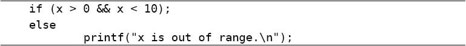
改写成下面这种形式：
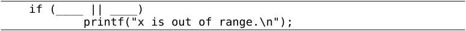
____应该怎么填？
2．把代码段：
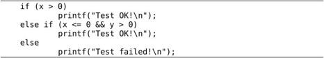
改写成下面这种形式：
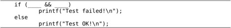
____应该怎么填？
3．有这样一段代码：
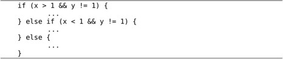
要进入最后一个else，x和y需要满足条件____||____。这里应该怎么填？
4．以下哪一个if判断条件是多余的可以去掉？这里所谓的“多余”是指，某种情况下如果本来应该打印Test OK!，去掉这个多余条件后仍然打印Test OK!，如果本来应该打印Test failed!，去掉这个多余条件后仍然打印Test failed!。
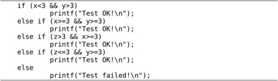
5．以下两段代码是否等价？
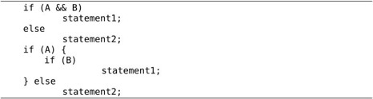
switch语句可以产生具有多个分支的控制流程。它的格式是：
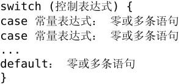
例如以下程序根据传入的参数1～7分别打印Monday～Sunday：
例4.1 switch语句
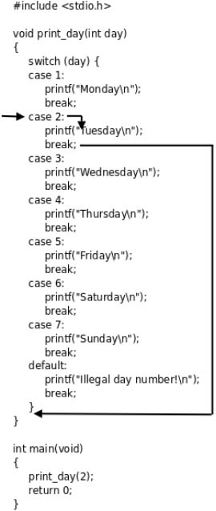
如果传入的参数是2，则从case 2分支开始执行，先是打印相应的信息，然后遇到break语句，它的作用是跳出整个switch语句块。C语言规定各case分支的常量表达式必须互不相同，如果控制表达式不等于任何一个常量表达式，则从default分支开始执行，通常把default分支写在最后，但不是必需的。使用switch语句要注意以下几点：
1．case后面跟的表达式必须是常量表达式，这个值和全局变量的初始值一样必须在编译时计算出来。
2．第4.2节讲过浮点型不适合做精确比较，所以C语言规定case后面跟的必须是整型常量表达式。
3．进入case后如果没有遇到break语句就会一直往下执行（这称为Fall Through），后面其他case或default分支的语句也会被执行到，直到遇到break，或者执行到整个switch语句块的末尾。通常每个case后面都要加上break语句，但有时会故意不加break，例如：
例4.2 缺break的switch语句
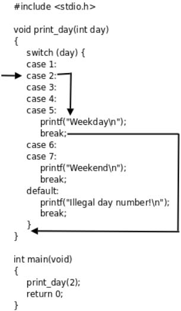
switch语句不是必不可缺的，显然可以用一组if ... else if ... else if ... else ...代替，但是一方面用switch语句会使代码更清晰，另一方面，有时候编译器会对switch语句做整体优化，使它比等价的if/else语句所生成的指令效率更高。